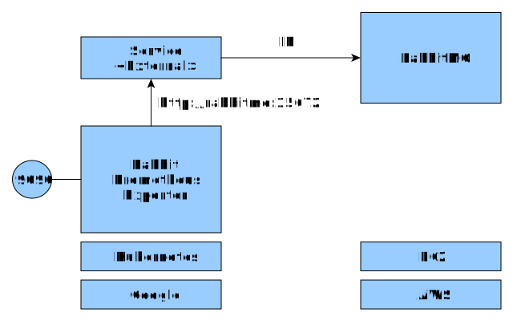

With Kubernetes,
from AWS to Google Cloud Platform.

Wojciech Barczyński (wojciech.barczynski@smacc.io)
Wojciech Barczyński
- Senior Software Engineer
Lead of Warsaw Team - SMACC - Before:
System Engineer Lyke - Before:
1000+ nodes, 20 data centers with Openstack
Background
- 10+ Developer and R&D
- E-commerce, Artifical Intelligence, Data Centers
- 1.5y with Kubernetes, 3+ AWS, 1+ GCE
0+ ProfitBricks - 3.5y with Openstack, 1000+ nodes, 21 data centers
- I do not like INFRA
- I do not like: puppet, chef, ansible,...
Story
- Lyke - [12.2016 - 07.2017]
- SMACC - [10.2017 - present]
Lyke
- E-commerce
- Mobile-only
- 50k+ users
- 2M downloads
- Top 10 Fashion Apps
w Google Play Store
 http://www.news.getlyke.com/single-post/2016/12/02/Introducing-the-New-Beautiful-LYKE
http://www.news.getlyke.com/single-post/2016/12/02/Introducing-the-New-Beautiful-LYKE
Good parts
- Fast Growth
- A/B Testing
- Data-driven
- Product Manager,
UI Designer,
Mobile Dev,
and tester - one body

Why Kuberentes
- Data center as a black-box
- Simple Semantic
- Batteries for your 12factor apps
- Meta-data support
- Service discovery
- Cloud-Provider independent, we can always move
Kubernetes
make docker_push; kubectl create -f app-srv-dpl.yaml


Pods
- See each other on localhost
- Live and die together
- Can expose multiple ports

Side-cars

Basic Concepts
| Name | Purpose | |
|---|---|---|
| Service | Interface | Entry point (Service Name) |
| Deployment | Factory | How many pods, which pods |
| Pod | Implementation | 1+ docker running |
Ingress Controller

Scaling
kubectl scale --replicas=3 -f app-srv-dpl.yaml
Rolling Release
kubectl set image deployment/app app=app:v2.0.0
Rolling Release
kubectl set image deployment/app app=app:v2.0.0
Rolling Release
kubectl set image deployment/app app=app:v2.0.0
Rolling Release
We used:
- Basic Rolling Releases per Component (focus on simplicity)
- A/B switches in Mobile App with Google Firebase
BlueGreen Deployment - ingress controller
Rolling Release with Deployments

Also possible
Ingress Rule per Component
cat tools/ingress-production.yaml
---
apiVersion: extensions/v1beta1
kind: Ingress
metadata:
name: api-status
namespace: production
annotations:
kubernetes.io/ingress.class: traefik
spec:
rules:
- host: api.example.com
http:
paths:
- path: /status
backend:
serviceName: api-status
servicePort: 80
Integration with Prometheus
cat memcached-0-service.yaml
---
apiVersion: v1
kind: Service
metadata:
name: memcached-0
labels:
app: memcached
kubernetes.io/name: "memcached"
role: shard-0
tier: backend
annotations:
prometheus.io/scrape: "true"
prometheus.io/scheme: "http"
prometheus.io/path: "metrics"
prometheus.io/port: "9150"
spec:
type: NodePort
ports:
- port: 11211
targetPort: 11211
selector:
app: memcached
role: shard-0
Use Labels in Alert Rules
ALERT ProductionAppServiceInstanceDown
IF up { environment = "production", app =~ ".+"} == 0
FOR 4m
ANNOTATIONS {
summary = "Instance of {{$labels.app}} is down",
description = " Instance {{$labels.instance}} of app {{$labels.app}} has been down for more than 4 minutes"
}
AlertManager
Use Labels in Alert Routing
Call somebody if the label isseverity=page:
---
group_by: [cluster]
# If an alert isn't caught by a route, send it to the pager.
receiver: team-pager
routes:
- match:
severity: page
receiver: team-pager
receivers:
- name: team-pager
opsgenie_configs:
- api_key: $API_KEY
teams: example_teamGoogle Container Engine
- Managed k8s
- Integrated with Google Cloud
- Identity-Aware Proxy
- Google 2-factor auth

New with Old
Old with new
- Ad-hoc
- DNS entries to nodes
- Some talking over (secured) public endpoints
Change the Development practices
See Conway's lawWhat I would do different
- More aggressive getting k8s components running in production
- Cut all PoC to 2 weeks max (consul, Vault, Hydra,...)
- Introduce HashiCorp in the old stack first
- Migrate the data to Google Mysql earlier
Building new systems
- Ability to replicate user traffic
SMACC
- End-to-end Automation
of Accounting - Recognized AI FinTech Startup in Germany
- https://www.smacc.io/en/
Summary
- Changes happens: Single point of entry, README.rst
- Kubernetes is the new Linux!
- Less important your cloud provider
- RAFT... CAP... in the end it is about people
Thank you

Questions?
Backup Slides
0.1 ➡ 1.0
Your component needs to get much more smarter.